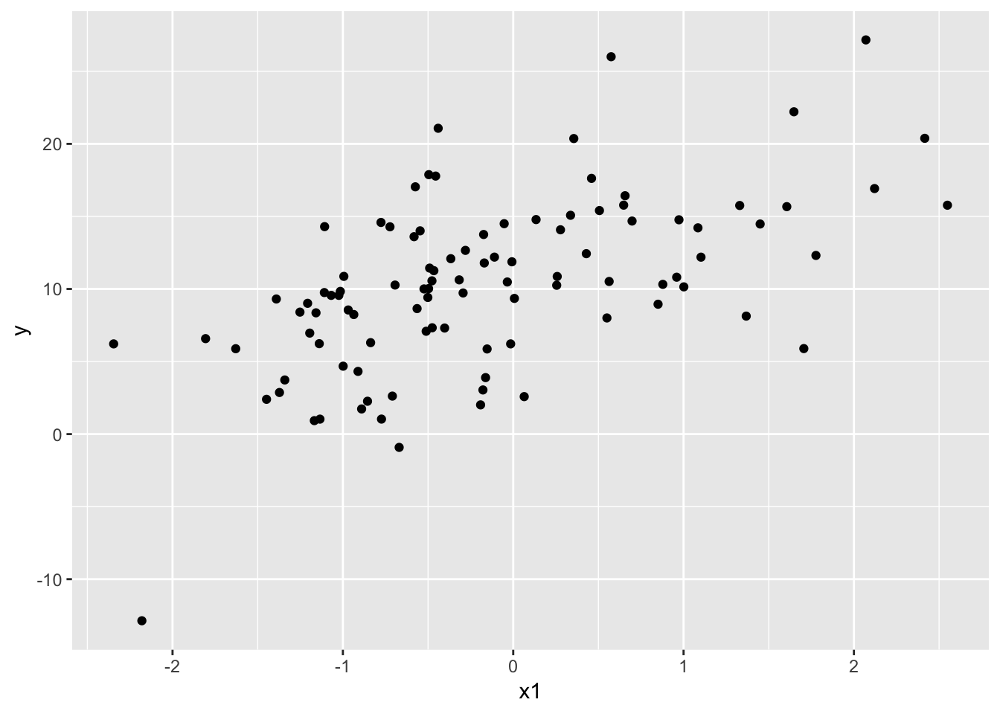
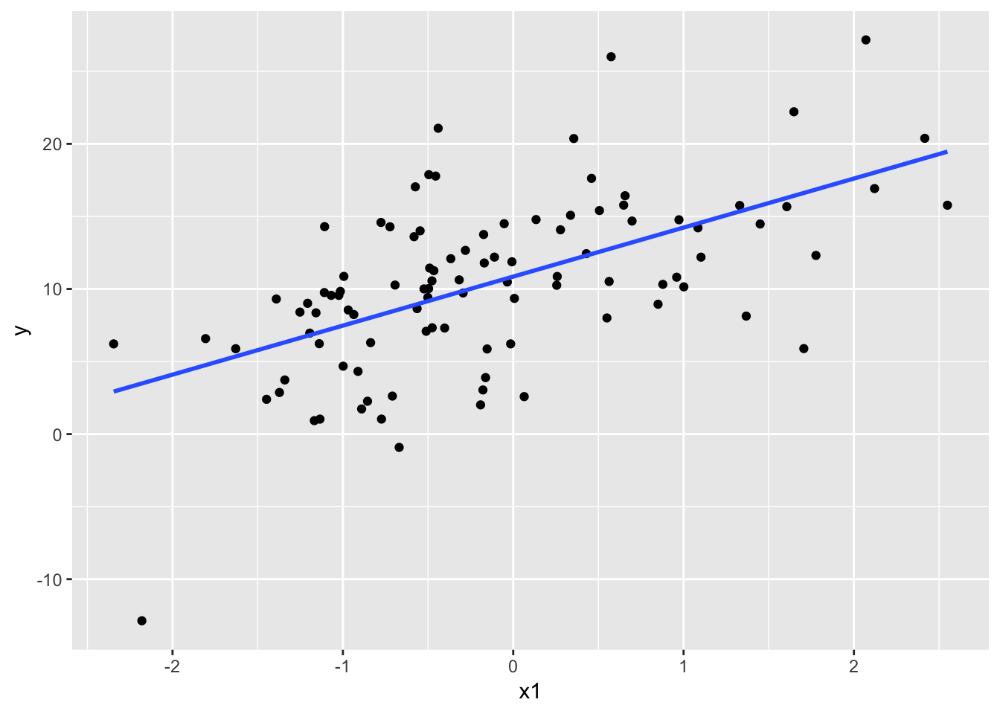

Chapter 8 回帰分析
回帰分析の基礎について学ぶ。
* 回帰分析
* 最小二乗法
* 重回帰分析
install.packages("tidyverse")
install.packages("car")
library(tidyverse)
library(car)8.1 回帰分析
以下のプログラムを読み込み，サンプルデータを作る。
#架空のデータを作る
set.seed(1234)
N = 100
a = 10
b1 = 3
b2 = 0.5
x1 = rnorm(n = N)
x2 = rnorm(n = N)
e = rnorm(n = N, sd = 5)
y = b1*x1 + b2*x2 + a + e
sample_data = data.frame(x1 = x1, x2 = x2, y= y)
head(sample_data) #サンプルデータの上数行を表示## x1 x2 y
## 1 -1.2070657 0.41452353 9.012199
## 2 0.2774292 -0.47471847 14.078772
## 3 1.0844412 0.06599349 14.213890
## 4 -2.3456977 -0.50247778 6.215336
## 5 0.4291247 -0.82599859 12.432780
## 6 0.5060559 0.16698928 15.403974qplot(data=sample_data, x1, y) #x1とyの散布図を示す
以下のことが知りたい。
- 新たに測定を行ったとき，x1 = 0.1 の値が得られた。この値から，y がどのような値になるのか？（新たなデータから，yを予測する）
- x1 が 1増えたら，y がどれくらい増えるのか？（x1の効果の強さを知りたい）
回帰分析(regresion analysis)は，「データの予測」と「効果の測定」を目的として行う。
回帰分析とは，以下の式により独立変数の値から従属変数の値を予測する解析である。以下のような式は，「回帰式」あるいは「線形予測子」と呼ばれる。
\[ \begin{equation} \hat{y} = bx+a \end{equation} \]
xを独立変数，yを従属変数とする。\(\hat{y}\)は，yの予測値とする。傾きbと切片aをデータから求める。 実測値であるyと予測値である\(\hat{y}\)の差が最も小さくなるときの，bとaを求める。
- 回帰分析はシンプルな直線の式から結果を予測する解析である。
- 切片aは，独立変数xがゼロのときの従属変数の予測値を表現している。
- 傾きは，回帰係数（regression coefficient）と呼ばれる。
- 回帰係数は独立変数が従属変数にもたらす効果の強さを意味する。つまり，効果量の一種ともいえる。
なお，回帰分析において独立変数を「説明変数」，従属変数を「目的変数，応答変数，ないしは被説明変数」という場合もある。
8.1.1 回帰分析の結果の解釈
回帰分析をする場合，Rではlm()を使う。
result = lm(data = sample_data, y ~ x1) #結果を別の変数で保存しておき，summary()関数で詳細な結果を出すことができる
summary(result)##
## Call:
## lm(formula = y ~ x1, data = sample_data)
##
## Residuals:
## Min 1Q Median 3Q Max
## -16.3526 -3.3001 0.5401 2.6685 13.2098
##
## Coefficients:
## Estimate Std. Error t value Pr(>|t|)
## (Intercept) 10.8529 0.4945 21.95 < 2e-16 ***
## x1 3.3780 0.4889 6.91 4.94e-10 ***
## ---
## Signif. codes: 0 '***' 0.001 '**' 0.01 '*' 0.05 '.' 0.1 ' ' 1
##
## Residual standard error: 4.886 on 98 degrees of freedom
## Multiple R-squared: 0.3276, Adjusted R-squared: 0.3207
## F-statistic: 47.74 on 1 and 98 DF, p-value: 4.935e-10- 係数（Coefficients）の結果を見る。
- Interceptは切片を意味する。x1が独立変数の傾きを意味する。
- Estimateが推定された切片または傾きの値である。
- Std.Errorは推定された係数の標準誤差である。
- t value及びPrは係数の有意性検定の結果を示している（それぞれt値，p値）。ここでは，「係数がゼロである」という帰無仮説を検定している。p値が極端に低い場合は，「求めた係数の値は有意にゼロから乖離している」と結論付けることができる。
- Interceptは切片を意味する。x1が独立変数の傾きを意味する。
- 傾きが意味することは，独立変数が1単位増えたら従属変数がどう変化するかということである。
- 係数がプラスならば，係数の値が増えると従属変数の値が増える関係にあることを意味する。
- 係数がマイナスならば，係数が値が増えると従属変数が減る関係にあることを意味する。
- さっきの散布図に回帰分析から求めた回帰直線を引いてみよう。
p = qplot(data = sample_data, x1, y)
p = p + stat_smooth(method = "lm", se = FALSE)
p
概ねデータに重なるかたちで直線が引かれている。
- 他にも出力に「Multiple R-Squared」とあるが，これは「決定係数」と呼ばれるもので，データの全ての分散のうち，今回の回帰分析によって説明できている割合を意味する。0から1の範囲を取り，1に近いほど今回の回帰分析の結果がデータを良く説明できていることを意味する。
\[ \begin{equation} R^2 = \frac{\sum^n_{i=1}(\hat{y}_i-\bar{y})^2}{\sum^n_{i=1}(y_i-\bar{y})^2} \end{equation} \] \(y\)は実測値，\(\bar{y}\)は実測値yの平均値，\(\hat{y}\)は回帰分析で求めたyの予測値を意味する。
8.1.2 最小二乗法（＊）
では，回帰分析では傾きと切片の値をどう求めているのだろうか？
実測値と予測値との差は残差（Residual value）と呼ばれる。残差が最も小さくなるときの傾き及び切片を，yを予測する上で最適な傾き及び切片の値として採用する（残差が最小となるときの式が，データをうまく説明できていると解釈できる）。 このような回帰式の切片及び傾きの求め方を，「最小二乗法」という。
- ある条件のもとで結果を最小あるいは最大にする手法のことを，数学では最適化と呼ぶ。最小二乗法とは最適化手法の一種である。
- 当然ながら手計算では困難である。普通はコンピュータを使って計算する。Rには最適化を行うための関数
optim()が用意されている。 - あくまで参考までに，最小二乗法を
optim()で行ったプログラムを以下に示す。
y = sample_data$y
x1 = sample_data$x1
residual = function(para){
b = para[1]
a = para[2]
hat_y = b*x1 + a #x1とパラメータa, bから，予測値hat_yを計算する
sum((y - hat_y)^2) #予測値と実測値との差の二乗の合計値を求めたものをresidualという変数で保存
}
optim(par = c(1, 1), residual) #特に何も指定しなければ，residualという変数を最小化せよという命令となる（par=c(1, 1)は，bとaを計算するときの初期値を1, 1にせよという命令。あまり深く考えなくて良い）。出力結果の「par」に，傾き(b)と切片(a)の推定結果が出る。lm()関数を使って計算した値と近似しているはず。## $par
## [1] 3.379037 10.852593
##
## $value
## [1] 2339.32
##
## $counts
## function gradient
## 67 NA
##
## $convergence
## [1] 0
##
## $message
## NULL最小二乗法以外にも，「最尤法（さいゆうほう）」という最適化手法でも同じ回帰係数を求めることができる。最尤法については，一般化線形モデルの回で説明する。
8.2 重回帰分析
独立変数が複数の場合の回帰分析は，重回帰分析(multivariant regression analysis)と呼ばれる。
独立変数が一つの場合は，単回帰分析と呼んで区別することもある。
例えば，独立変数が2つの場合の回帰式は以下のようになる。
\[ \begin{equation} \hat{y} = b_{1}x_{1}+b_{2}x_{2} + a \end{equation} \]
result_2 = lm(data=sample_data, y ~ x1 + x2)
summary(result_2)##
## Call:
## lm(formula = y ~ x1 + x2, data = sample_data)
##
## Residuals:
## Min 1Q Median 3Q Max
## -15.966 -3.367 0.530 2.912 13.825
##
## Coefficients:
## Estimate Std. Error t value Pr(>|t|)
## (Intercept) 10.8179 0.4874 22.196 < 2e-16 ***
## x1 3.4026 0.4816 7.065 2.46e-10 ***
## x2 0.9416 0.4687 2.009 0.0473 *
## ---
## Signif. codes: 0 '***' 0.001 '**' 0.01 '*' 0.05 '.' 0.1 ' ' 1
##
## Residual standard error: 4.812 on 97 degrees of freedom
## Multiple R-squared: 0.3544, Adjusted R-squared: 0.3411
## F-statistic: 26.63 on 2 and 97 DF, p-value: 6.049e-10例えば変数 X1 の回帰係数は，他の独立変数の効果が同じとした場合に X1 が1単位増えた時の y の変化量を意味している。 このように他の変数の影響を統制（control）した上で独立変数の効果を検討することができるのが，回帰分析のメリットの一つである。
8.2.1 多重共線性（＊）
独立変数同士が強く相関していると，回帰分析の結果は信用できない恐れがある。このような問題は「多重共線性（multicollinearity）」と呼ばれる。例えば，\(x_{1}\)と\(x_{2}\)が相関している，つまりほぼ\(x_{1}=x_{2}\)と言える場合，傾きの値もほぼ\(b_{1}=b_{2}\)となる。この場合，傾きの組み合わせが複数ありえるため（\(b_{1}=1, b_{2}=2\)や\(b_{1}=2, b_{2}=1\)），パラメータの値を推定することが出来ない。
- 独立変数同士の相関が0.8を超えている場合は，多重共線性を疑った方が良い。
多重共線性を疑う基準として，VIF(Variance inflation factor)と呼ばれる指標もある。VIFが10を超えていたら，多重共線性を疑った方が良いとされている。
\[ \begin{equation} VIF = \frac{1}{1-R^2} \end{equation} \] 上の式の\(R^2\)は，ある独立変数を従属変数としたときの他の独立変数による重回帰分析での決定係数を意味する。
- carパッケージの
vif()を使うと，VIFを計算してくれる。
car::vif(result_2) #lm()関数で計算した回帰分析の結果を入れれば良い。## x1 x2
## 1.000645 1.0006458.2.2 決定係数
先に説明したように，決定係数は回帰分析によって説明されるデータの分散の割合，すなわち「回帰分析の精度の良さ」を示す指標として認識されている。
しかし，決定係数は基本的に独立変数を多く入れれば大きい値を取る傾向にある（意味のない変数を入れたとしても，データの分散を多少は説明できるようになる）。
この問題を解消するために，決定係数とは別に「情報量基準」という指標が用いられている。詳しくは「一般化線形モデル」の回で説明する。
8.3 ダミー変数（独立変数が質的変数の場合）
- 上の例は独立変数が量的変数の場合を用いたが，質的変数（性別，学生か否かなど）の場合でも可能である。解析の際には，変数を0か1の変数に変換する必要がある。ダミー変数（dummy variable）と呼ばれる。
#サンプルデータの作成
set.seed(1234)
y = rnorm(100)
x = round(runif(100),0)
sampledata_2 = data.frame(y = y,x = x)
head(sampledata_2) #sampledata_2の上数行だけを表示する。## y x
## 1 -1.2070657 1
## 2 0.2774292 1
## 3 1.0844412 0
## 4 -2.3456977 1
## 5 0.4291247 1
## 6 0.5060559 1result_3 = lm(data = sampledata_2, y ~ x)
summary(result_3)##
## Call:
## lm(formula = y ~ x, data = sampledata_2)
##
## Residuals:
## Min 1Q Median 3Q Max
## -2.0686 -0.7651 -0.1993 0.6510 2.6929
##
## Coefficients:
## Estimate Std. Error t value Pr(>|t|)
## (Intercept) -0.02642 0.14456 -0.183 0.855
## x -0.25066 0.20047 -1.250 0.214
##
## Residual standard error: 1.002 on 98 degrees of freedom
## Multiple R-squared: 0.0157, Adjusted R-squared: 0.005658
## F-statistic: 1.563 on 1 and 98 DF, p-value: 0.2142独立変数が一つで二値の場合，回帰係数の有意性検定の結果は，t検定を行った場合と一致する。つまり，独立変数が二値の単回帰分析でやっていることは，２群間の平均値の差の検定と同じである。その理由は，一般化線形モデルの回で説明する。
t.test(data = sampledata_2, y ~ x, paired = F, var.equal = T) #等分散を仮定した場合の検定。##
## Two Sample t-test
##
## data: y by x
## t = 1.2503, df = 98, p-value = 0.2142
## alternative hypothesis: true difference in means is not equal to 0
## 95 percent confidence interval:
## -0.1471737 0.6484883
## sample estimates:
## mean in group 0 mean in group 1
## -0.02641995 -0.27707724練習問題
問１，問２いずれも宿題とする。なお，数値は小数点第３位まで報告せよ（小数点第４位以下は四捨五入）。
問１
Rにはattitudeというデータが入っている。ある金融機関の30部門で従業員に行ったアンケート調査の結果である。各部署ごとに，７つの質問項目について好意的な評価をした人の割合が示されている。
- ちなみに，データの
complaints, privileges, learning, raises, critical, advanceはそれぞれ，「従業員の不満への対応」，「特権を許さない」，「学習の機会」，「能力に応じた昇給」，「批判的すぎる」，「昇進」を意味する。
head(attitude)## rating complaints privileges learning raises critical advance
## 1 43 51 30 39 61 92 45
## 2 63 64 51 54 63 73 47
## 3 71 70 68 69 76 86 48
## 4 61 63 45 47 54 84 35
## 5 81 78 56 66 71 83 47
## 6 43 55 49 44 54 49 34ratingを従属変数，その他の変数（complaints, privileges, learning, raises, critical, advance）を独立変数とした重回帰分析を行い，
小問１
それぞれの独立変数の傾きの係数及び検定の結果を報告せよ（係数の値とp値だけでよい）。
- ヒント：一般的に回帰係数の推定結果を論文などで報告するときは，(b=x.xxx, p=.xxx)とする。bは回帰係数を意味する。
小問２
5%水準で有意な効果を持った独立変数を挙げ，それらの独立変数の増減によって従属変数がどう変化する傾向にあるかを報告せよ。
小問３
learningが１単位増えると，ratingはいくら変化するかを述べよ。
問２
以下のプログラムを読み込み，サンプルデータ dat_q2 を作成する。
このデータには，A県とB県それぞれで10人の生徒を選んで学力テストを行った結果を示している（架空の調査である）。Prefectureが県，Value がテストの成績を意味する。
A = c(38, 53, 61, 27, 54, 55, 44, 45, 44, 41)
B = c(55, 50, 52, 61, 70, 59, 55, 51, 52, 84)
Value = c(A, B)
Prefecture = c(rep("A", 10), rep("B", 10))
dat_q2 = data.frame(Prefecture = Prefecture, Value = Value)
dat_q2## Prefecture Value
## 1 A 38
## 2 A 53
## 3 A 61
## 4 A 27
## 5 A 54
## 6 A 55
## 7 A 44
## 8 A 45
## 9 A 44
## 10 A 41
## 11 B 55
## 12 B 50
## 13 B 52
## 14 B 61
## 15 B 70
## 16 B 59
## 17 B 55
## 18 B 51
## 19 B 52
## 20 B 84A県=1, B県=0のダミー変数を作り，そのダミー変数を独立変数，Value を従属変数とした回帰分析を行い，
小問１
A県=1を意味するダミー変数の傾きの推定値とp値を報告せよ。
- ヒント：このダミー変数を作る場合には，以下のようにプログラムを書くと良い（今後のためにも覚えておくと良い）。
dat_q2$A = ifelse(dat_q2$Prefecture == "A", 1, 0) #「もしPrefectureがAならば1，それ以外ならば0とする，新しい変数Aを作れ」という命令ヒント：実はダミー変数を作らなくても，質的変数（i.e., Prefecture）を独立変数としてそのまま入れてもRは自動でダミー変数を作って計算してくれる。
小問２
t検定（等分散を仮定する）で，A県とB県の間で Value の平均値の比較を行い，A県とB県の間の平均値の差が5%水準で有意かどうかを述べよ（t値，自由度，p値も報告すること）。
- ヒント：対応のあるt検定か対応のないt検定，どちらが適切か？